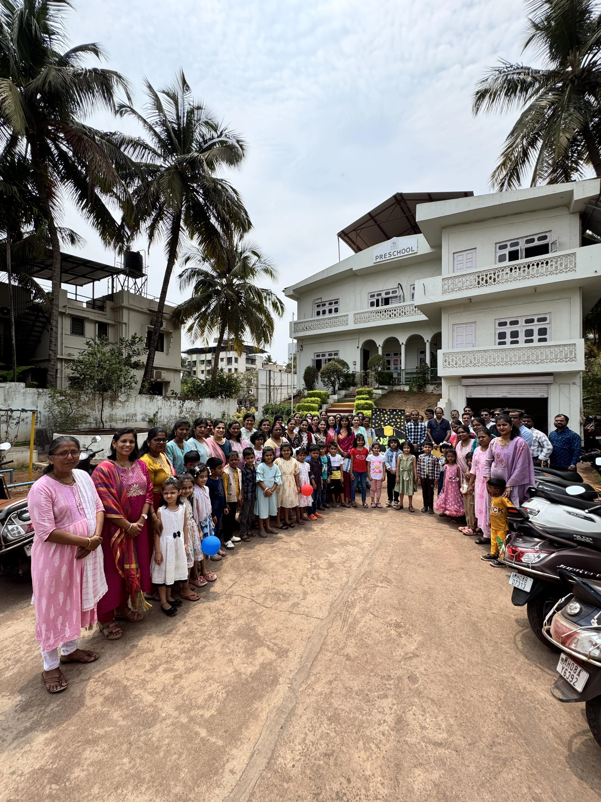
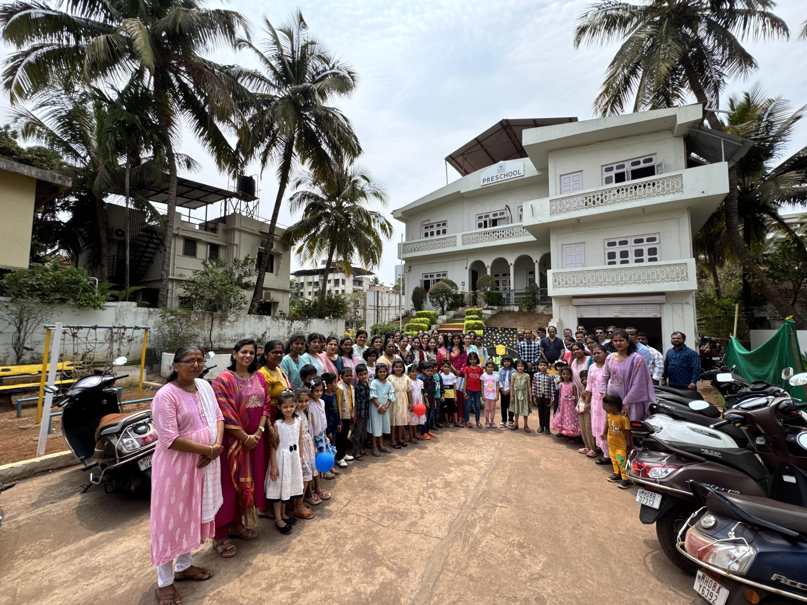
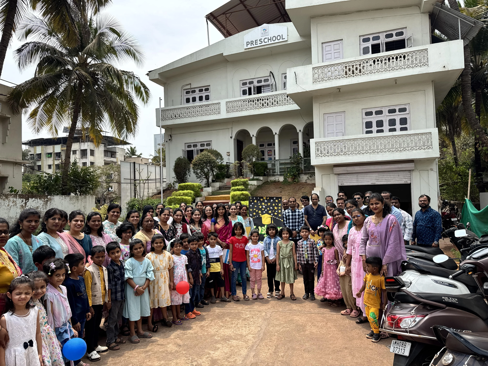

Where Little Minds Begin Big Journeys
At ONEST Gurukul Pre-Primary, we nurture young learners through joyful exploration, creative play, and foundational learning. Every child is valued, encouraged, and empowered to grow.
Welcome to Our Pre-Primary World
A safe, nurturing environment where every child discovers their unique potential through play, creativity, and guided exploration.
Safe & Secure
Child-proofed spaces, trained caregivers, and constant supervision ensure your little one's safety at all times.
Joyful Learning
Age-appropriate activities that inspire curiosity, build confidence, and foster a lifelong love for learning.
Play-Based Approach
Learning through play, exploration, and hands-on experiences that develop cognitive and social skills naturally.
Nurturing Care
Compassionate educators who understand each child's needs and create a warm, inclusive learning community.
Our Pre-Primary Curriculum
A comprehensive learning journey designed to develop essential skills through engaging, age-appropriate activities.
Early Literacy
Phonics, storytelling, and language development through songs, rhymes, and interactive reading sessions.
Early Numeracy
Number recognition, counting, patterns, and basic math concepts using manipulatives and visual aids.
Sensory Activities
Tactile exploration through sand, water, clay, and hands-on materials that enhance sensory development.
Motor Skills
Fine and gross motor development through drawing, cutting, outdoor play, and physical activities.
Art & Creativity
Painting, crafting, music, and creative expression to nurture imagination and artistic abilities.
Environmental Awareness
Nature walks, gardening, and eco-friendly activities that build awareness and love for the environment.
Our Learning Approach
Blending proven methodologies to create the perfect foundation for lifelong learning and growth.
Montessori Method
Self-directed activities, hands-on learning materials, and individualized instruction foster independence and confidence.
Play-Based Learning
Children learn best through play. We design engaging activities that build social, cognitive, and emotional skills naturally.
Experiential Education
Real-world experiences, field trips, and project-based learning make concepts tangible and memorable for young minds.
Facilities for Little Learners
Thoughtfully designed spaces that inspire exploration, creativity, and safe play for our youngest students.

Safe Play Area
Age-appropriate playground equipment with soft surfaces, slides, swings, and climbing structures for physical development.
Cozy Reading Corner
A vibrant library filled with picture books, storytelling sessions, and comfortable seating to nurture a love for reading.
Creative Activity Room
Dedicated spaces for art, music, drama, and hands-on projects where imagination comes alive.
Kids' Garden
Outdoor learning garden where children plant, water, and watch plants grow, connecting with nature firsthand.
A Day at Pre-Primary
Structured yet flexible daily routines that balance learning, play, rest, and nutrition for holistic development.
Welcome & Circle Time
Morning greetings, songs, calendar activities, and sharing time to build community and communication skills.
Learning Centers
Rotating activities including literacy, math, art, sensory play, and Montessori work tailored to individual learning levels.
Snack Time
Healthy, nutritious snacks served in a social setting, teaching table manners and healthy eating habits.
Outdoor Play
Supervised outdoor activities, free play, games, and physical exercises to develop motor skills and social interaction.
Story Time
Engaging storytelling sessions, puppetry, and read-alouds that spark imagination and build listening skills.
Reflection & Goodbye
Recap of the day's learning, sharing favorite moments, and preparing for home with songs and positive affirmations.
Moments of Joy & Discovery
Glimpses of our vibrant pre-primary community in action—learning, playing, and growing together every day.



Ready to Begin Your Child's Learning Journey?
Join the ONEST Gurukul family and give your child the gift of joyful, meaningful early education. Admissions are now open for the 2025-26 academic year.